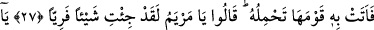
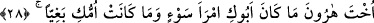
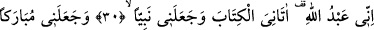
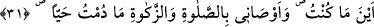
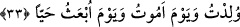

HZ. ÎSÂ’NIN
BEŞİKTE KONUŞMASI
27. (Meryem) onu taşıyarak kavmine getirdi. “Ey Meryem! Sen tuhaf bir iş
yaptın.” dediler.
28. “Ey Harun’un kız kardeşi, baban kötü bir adam değildi, annen de fâhişe
değildi (sen ne yaptın böyle dediler?)”
29. (Meryem), çocuğu gösterdi. Dediler ki: “Beşikteki çocukla nasıl konuşuruz?”
30. (Çocuk) dedi ki: “Ben Allâh’ın kuluyum, (O) bana kitabı verdi, beni
peygamber yaptı.”
31. “Beni bulunduğum her yerde mübarek kıldı. Sağ olduğum sürece bana namaz
kılmayı, zekât vermeyi emretti.”
32. “(Beni) anneme iyilik eder (kıldı), beni baş kaldıran bir zorba yapmadı.”
33. “Doğduğum gün de, öleceğim gün de ve diri olarak kaldırılacağım gün de bana
esenlik verilmiştir.” dedi.
Meryem “onu taşıyarak kavmine getirdi.” Yani Meryem, loğusalıktan temizlendikten
sonra oğlu ile beraber kavmine doğru geldi.
İbn Abbâs (r.anhümâ)’dan rivayet edildiğine göre Hz. Meryem güneş doğduğu zaman
onların yanından çıktı, öğlen vakti çocuğu ile birlikte onlara geri döndü.
Rivayet edildiğine göre Zekeriyya (a.s.), Meryem’i aradı, odasında bulamadı ve çok
üzüldü. Teyzesinin oğlu Yusuf’a: “Onu aramaya çık” dedi. O da Meryem’in izini
sürmeye başladı. Nihayet onu hurma ağacının altında buldu. Meryem kavmine döndü.
Onlar sâlih kimselerden olan ev halkı idi. Zekeriyya (a.s.) da onlarla beraber
oturuyordu. Durumu görünce ağladılar, üzüldüler ve onu ayıplayarak: “Ey Meryem sen
tuhaf bir iş yaptın” yani büyük, benzersiz, yalan olduğu kesin bir iş yaptın “dediler.”